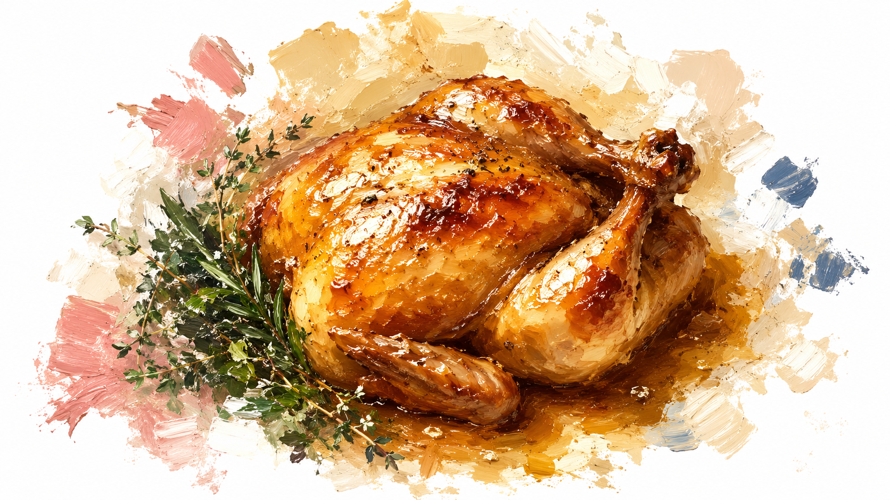

パリで前撮りするおふたりのために、さすけが実際に行ったレストランと、先輩カップルから届いたおすすめをまとめました。あわせて休憩に使えるカフェ・サロン・ド・テも掲載しています。

現在地、またはホテル名・住所を入力すると、近いレストラン・カフェを距離順に表示します
パリ在住のさすけが実際に行って良かったお店と、行ってみたいなーと目をつけているお店のリストです。新しいお店に行った際によかったら更新していきますが、外食は中華ばっかりなのであまり更新できず…カフェは気になっているお店をメディア記事から調べてまとめています。
近日公開予定です。
パリは日本食ブームもあってお店はかなり多いですが、ちょっと信用ならない日本食屋さんも多いです。貴重な食事の機会ですが、どうしても日本食が食べたくなったら無理に我慢しなくて大丈夫。そんな時にハズレのお店を引いてしまうと悲しいので、現地の人お墨付きの日本食を紹介します。
避けた方がいいのは、NAGANOやTOYAMAのように地名を冠したお店です。
近日公開予定です。
近日公開予定です。
実際にパリで前撮りをした先輩カップルから届いたおすすめです。「投稿する」ページからの投稿を確認のうえ掲載しています。
まだ投稿がありません。「投稿する」からぜひ教えてください。
まだ投稿がありません。「投稿する」からぜひ教えてください。